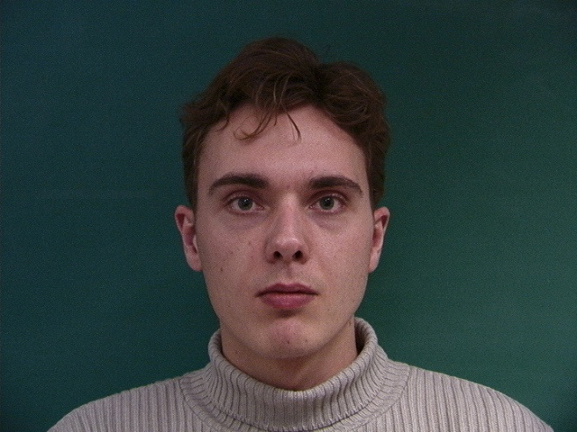
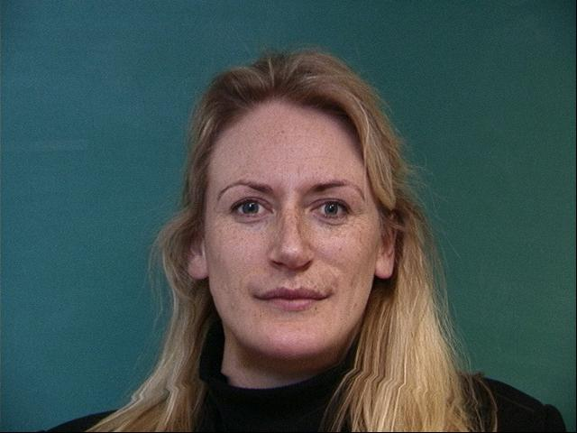

Use cpselect in Control Point Selection tool from MATLAB to define corresponding keypoints of the
two images.
Use scipy.spatial.Delaunay on the average shape of the two images to compute the optimal
triangulations.
| original | keypoints | triangulations |
|---|---|---|
The above images are from Martin Schoeller's Close Up.
Warp the shapes of both images to the average of them.
Compute the affine transformations from the shapes of the original images to the average shape.
Compute the inverses of those transformations.
For every pixel in the mid-way face, use these inverses to cross-dissolve (average) the colors.
scipy.interpolate.RectBivariateSpline to interpolate the result when the corresponding
color does not land on pixel.Produce a warp from Image A to Image B. The shapes and colors of intermediate frames are controled by separate parameters.
Use only the images of full frontal face, neutral expression, diffuse light.
Compute the average shape.
Morph all images to the average shape.
Examples:
| original |  |
 |
 |
| morphed to the average shape |  |
The forehead is not well processed since the dataset does not count for this region and the newly introduced image does not present the face in the same angle.
The above dataset is from M. B. Stegmann, B. K. Ersboll and R. Larsen, "FAME-a flexible appearance modeling environment," in IEEE Transactions on Medical Imaging, vol. 22, no. 10, pp. 1319-1331, Oct. 2003, doi: 10.1109/TMI.2003.817780.
| hyper average |
|
|
|
| anti average |
|
|
|
These caricatures align with the actual situations. The dataset represents Nordic appearance. They generally feature
Change gender.

The average of the race above is from Human Phenotypes.
Change race.

The average of the race above is from Human Phenotypes.
Lipsync demonstrating "Alea iacta est."
The footage of the above lipsync is from Reallusion .